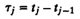
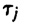

PART VI
QUEUEING MODELS
Queueing theory is the key analytical modeling technique used for computer systems performance analysis. The literature on queueing theory is vast. Several hundred papers are published every year. Fortunately, a large percentage of day-to-day performance questions can be answered using only a few techniques. To begin with, you need a knowledge of the queueing notation and some results on single-queue systems. For systems with multiple queues, operational analysis, mean-value analysis, and convolution are very useful. In addition, the technique of hierarchical modeling is helpful in analyzing large systems. The discussion in this part has been limited to these techniques.
Following are examples of questions that you should be able to answer after reading this part:
- 1. What are the various types of queues?
- 2. What is meant by an M/M/m/B/K queue?
- 3. How should you obtain response time, queue lengths, and server utilizations?
- 4. How should you represent a system using a network of several queues?
- 5. How should you analyze simple queueing networks?
- 6. How should you obtain bounds on the system performance using queueing models?
- 7. How should you obtain variance and other statistics on system performance?
- 8. How should you subdivide a large queueing network model and solve it?
CHAPTER 30
INTRODUCTION TO QUEUEING THEORY
If the facts don’t fit the theory, change the facts.
—Albert Einstein
In computer systems, many jobs share the system resources such as CPU, disks, and other devices. Since generally only one job can use the resource at any time, all other jobs wanting to use that resource wait in queues. Queueing theory helps in determining the time that the jobs spend in various queues in the system. These times can then be combined to predict the response time, which is basically the total time that the job spends inside the system. It is not, therefore, surprising that queueing models have become so popular among computer systems performance analysts.
30.1 QUEUEING NOTATION
Imagine yourself waiting in a queue with other computer science students at a typical computer terminal room, as shown in Figure 30.1. The service facility has a number of terminals to be used by students. If all terminals are busy, the arriving students wait in a queue. In queueing theory terms, the students would be called “customers.” In order to analyze such a system, the following characteristics of the system should be specified:
- 1. Arrival Process: If the students arrive at times t1,t2,...,tj, the random variables  are called the interarrival times.It is generally assumed that the  form a sequence of Independent and Identically Distributed (IID) random variables. The most common arrival process is the so-called Poisson arrivals, which simply means that the interarrival times are IID and are exponentially distributed. Other distributions, such as the Erlang and hyperexponential, are also used. In fact, several queueing results are valid for all distributions of interarrival times. In such a case, the result is said to hold for a general distribution.

FIGURE 30.1 Basic components of a queue.
- 2. Service Time Distribution: We also need to know the time each student spends at the terminal. This is called the service time. It is common to assume that the service times are random variables, which are IID. The distribution most commonly used is the exponential distribution. Other distributions, such as the Erlang, hyperexponential, and general, are also used. Again the results for a general distribution apply to all service time distributions.
- 3. Number of Servers: The terminal room may have one or more terminals, all of which are considered part of the same queueing system since they are all identical, and any terminal may be assigned to any student. If all the servers are not identical, they are usually divided into groups of identical servers with separate queues for each group. In this case, each group is a queueing system.
- 4. System Capacity: The maximum number of students who can stay may be limited due to space availability and also to avoid long waiting times. This number is called the system capacity. In most systems, the capacity is finite. However, if the number is large, it is easier to analyze if infinite capacity is assumed. The system capacity includes those waiting for service as well as those receiving service.
- 5. Population Size: The total number of potential students who can ever come to the computer center is the population size. In most real systems, the population size is finite. If this size is large, once again, it is easier to analyze if we assume that the size is infinite.
- 6. Service Discipline: The order in which the students are served is called the service discipline. The most common discipline is First Come, First Served (FCFS). Other possibilities are Last Come, First Served (LCFS) and Last Come, First Served with Preempt and Resume (LCFS-PR). Computer system CPUs generally use Round-Robin (RR) with a fixed-size quantum. If the quantum size is small compared to average service time, it is called Processor Sharing (PS) since each of the n waiting jobs would then receive 1/nth of the processor’s time. A system with a fixed delay, for example, a satellite communication link, is called an Infinite Server (IS) or a delay center. Terminals in timesharing systems are usually modeled as delay centers.
Sometimes the scheduling is based on the service time required. Examples of such disciplines are Shortest Processing Time first (SPT), Shortest Remaining Processing Time first (SRPT), Shortest Expected Processing Time first (SEPT), and Shortest Expected Remaining Pro-first (SERPT). In the real world, occasionally one may encounter Biggest In, First Served (BIFS) or Loudest Voice, First Served (LVFS).
To specify a queueing system, we need to specify these six parameters. Queueing theorists, therefore, use a shorthand notation called the Kendall notation in the form A/S/m/B/K/SD, where the letters correspond in order to the six parameters listed above. That is, A is the interarrival time distribution, S is the service time distribution, m is the number of servers, B is the number of buffers (system capacity), K is the population size, and SD is the service discipline.
The distributions for interarrival time and service times are generally denoted by a one-letter symbol as follows:
|
| M
| Exponential
|
|
| Ek
| Erlang with parameter k
|
|
| Hk
| Hyperexponential with parameter k
|
|
| D
| Deterministic
|
|
| G
| General
|
Exponential and Erlang distributions were defined earlier in Chapter 29. A deterministic distribution implies that the times are constant and there is no variance. A general distribution means that the distribution is not specified and the results are valid for all distributions.
)
){kind=link}